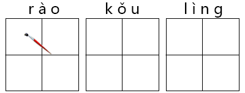
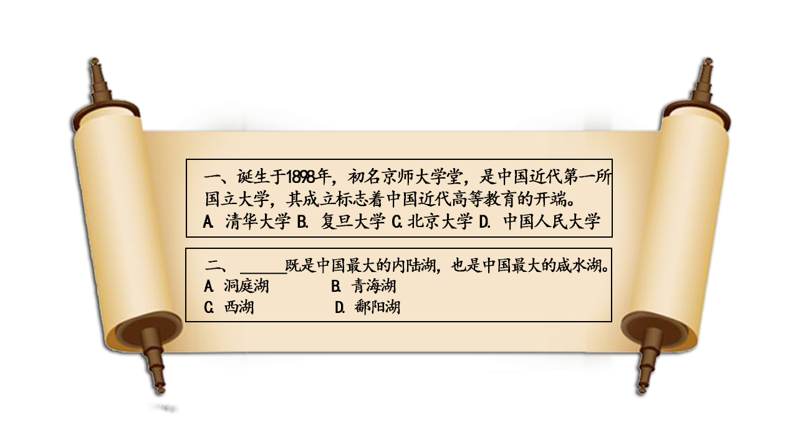

2016-11-09阅读（830）

高手隐于市
念好汉字四声不简单
长沙话版绕口令
问题：
请正确读出句子——红黄粉凤凰花凤凰
答案：红(hóng)黄(huáng)粉(fěn)凤(fèng)凰(huáng)花(huā)凤(fèng)凰(huáng)

最难绕口令集锦：
1、初入江湖：化肥会挥发
2、小有名气：黑化肥发灰，灰化肥发黑
3、名动一方：黑化肥发灰会挥发;灰化肥挥发会发黑
4、天下闻名：黑化肥挥发发灰会花飞;灰化肥挥发发黑会飞花
5、一代宗师：黑灰化肥会挥发发灰黑讳为花飞;灰黑化肥会挥发发黑灰为讳飞花
6、超凡入圣：黑灰化肥灰会挥发发灰黑讳为黑灰花会飞;灰黑化肥会会挥发发黑灰为讳飞花化为灰
7、天外飞仙：黑化黑灰化肥灰会挥发发灰黑讳为黑灰花会回飞;灰化灰黑化肥会会挥发发黑灰为讳飞花回化为灰
8、喇嘛和哑巴：
打南边来了个喇嘛，手里提拉着五斤鳎(tǎ) 目。打北边来了个哑巴，腰里别着个喇叭。
南边提拉着鳎目的喇嘛要拿鳎目换北边别喇叭哑巴的喇叭。
哑巴不愿意拿喇叭换喇嘛的鳎目，喇嘛非要换别喇叭哑巴的喇叭。
喇嘛抡起鳎目抽了别喇叭哑巴一鳎目，哑巴摘下喇叭打了提拉着鳎目的喇嘛一喇叭。也不知是提拉着鳎目的喇嘛抽了别喇叭哑巴一鳎目，还是别喇叭哑巴打了提拉着鳎目的喇嘛一喇叭。
喇嘛炖鳎目，哑巴嘀嘀哒哒吹喇叭。
9、六十六头牛：
六十六岁的陆老头，盖了六十六间楼，买了六十六篓油，养了六十六头牛，栽了六十六棵垂杨柳。
六十六篓油，堆在六十六间楼;六十六头牛，扣在六十六棵垂杨柳。
忽然一阵狂风起，吹倒了六十六间楼，翻倒了六十六篓油，折断了六十六棵垂杨柳，砸死了六十六头牛，急煞了六十六岁的陆老头。
10、老六放牛：
柳林镇有个六号楼，刘老六住在六号楼。
有一天，来了牛老六，牵了六只猴;来了侯老六，拉了六头牛;来了仇老六，提了六篓油;来了尤老六，背了六匹绸。
牛老六、侯老六、仇老六、尤老六，住上刘老六的六号楼，半夜里，牛抵猴，猴斗牛，撞倒了仇老六的油，油坏了尤老六的绸。
牛老六帮仇老六收起油，侯老六帮尤老六洗掉绸上油，拴好牛，看好猴，一同上楼去喝酒。
11、天上七颗星：
天上七颗星，地上七块冰，台上七盏灯，树上七只莺，墙上七枚钉。
吭唷吭唷拔脱七枚钉。喔嘘喔嘘赶走七只莺。乒乒乓乓踏坏七块冰。一阵风来吹来七盏灯。一片乌云遮掉七颗星。
12、连念七遍就聪明：
天上七颗星，地下七块冰，树上七只鹰，梁上七根钉，台上七盏灯。
呼噜呼噜扇灭七盏灯，噯唷噯唷拔掉七根钉，呀嘘呀嘘赶走七只鹰，抬起一脚踢碎七块冰，飞来乌云盖没七颗星。一连念七遍就聪明。
13、司小四和史小世：
司小四和史小世，四月十四日十四时四十上集市，司小四买了四十四斤四两西红柿，史小世买了十四斤四两细蚕丝。
司小四要拿四十四斤四两西红柿换史小世十四斤四两细蚕丝。
史小世十四斤四两细蚕丝不换司小四四十四斤四两西红柿。
司小四说我四十四斤四两西红柿可以增加营养防近视，
史小世说我十四斤四两细蚕丝可以织绸织缎又抽丝。
14、酸枣子：
山上住着三老子，山下住着三小子，山腰住着三哥三嫂子。
山下三小子，找山腰三哥三嫂子，借三斗三升酸枣子，
山腰三哥三嫂子，借给山下三小子三斗三升酸枣子。
山下三小子，又找山上三老子，借三斗三升酸枣子，
山上三老子，还没有三斗三升酸枣子，
只好到山腰找三哥三嫂子，给山下三小子借了三斗三升酸枣子。
过年山下三小子打下酸枣子，还了山腰三哥三嫂子，两个三斗三升酸枣子。
15、墙上一根钉：
墙上一根钉，钉上挂条绳，绳下吊个瓶，瓶下放盏灯。
掉下墙上钉，脱掉钉上绳。滑落绳下瓶，打碎瓶下灯。
瓶打灯，灯打瓶，瓶说灯，灯骂绳，瓶说绳，绳说钉，丁丁当当，乒乓乓乓。
16、板凳与扁担：
板凳宽，扁担长。
扁担没有板凳宽，
板凳没有扁担长。
扁担在绑在板凳上，
板凳不让扁担绑在板凳上，
扁担偏要扁担绑在板凳上。
17、白老八：
白老八门前栽了八颗白果树，
从北边飞来了八个白八哥儿不知在哪住。
白老八拿了八个巴达棍儿要打八个白八哥儿，
八个八哥儿飞上了八颗白果树，
不知道白老八拿这八个巴达棍儿打着了八个白八哥儿，
还是打着了八颗白果树。
18、鹅和鸽：
天上一群大白鸽，河里一群大白鹅。
白鸽尖尖红嘴壳，白鹅曲项向天歌。
白鸽剪开云朵朵，白鹅拨开浪波波。
鸽乐呵呵，鹅活泼波，
白鹅白鸽碧波蓝天真快乐。
19、水连天：
天连水，水连天，
水天一色望无边，
蓝蓝的天似绿水，
绿绿的水如蓝天。
到底是天连水，
还是水连天?
20、买菜：
小艾和小戴，一起去买菜。
小艾把一斤菜给小戴，
小戴有比小艾多一倍的菜;
小戴把一斤菜给小艾，
小艾、小戴就有一般多的菜。
（以上内容编选自网络）
【答题环节】
看到这，我们也给大家测试两道题，题目选自汉语桥题库哟。

答案： 第1题：C
第2题：B
【有关汉语桥】
“汉语桥”是由孔子学院总部/国家汉办举办的国际中文赛事，是世界人文交流领域的知名品牌活动 。“汉语桥”中文比赛已成为外国学生学习汉语，了解中国的重要平台，在中国与世界各国青年之间架起了一座沟通心灵的桥梁。
内容制作：金杰、李畅